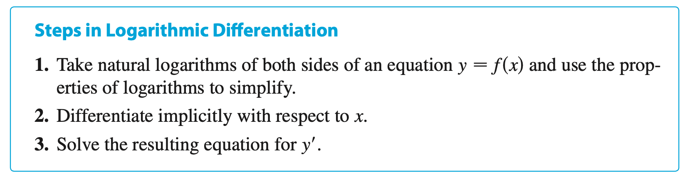
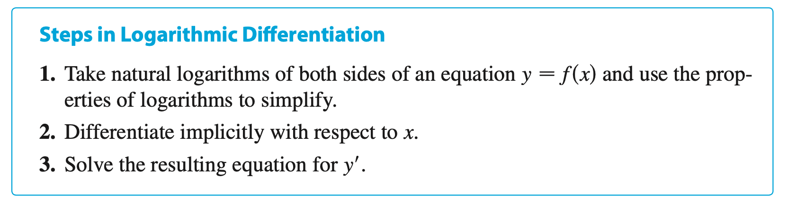

Chapter 6 | Inverse Functions
§6.1 | Inverse Functions


§6.2 | Exponential Functions and their Derivatives


Other Formulas, Proofs & Facts for f(x) = b^x
Basic Exponential Formula
f(x) &= a^x \\
f^{\prime}(x) &= a^x \cdot \ln(a) \\
Generalized Exponential Formula
f(x) &= a^{g(x)} \\
f^{\prime}(x)
&= a^{g(x)} \cdot \ln(a) \cdot \frac{\mathrm{d}}{\mathrm{d}x}\Big(g(x)\Big) \\\\
&= a^{g(x)} \cdot \ln(a) \cdot g^{\prime}(x) \\
Exponential Formula Proof
\newcommand{\d}[1]{\frac{\mathrm{d}}{\mathrm{d}{#1}}}
\newcommand{\df}[2]{\frac{\mathrm{d}{#1}}{\mathrm{d}{#2}}}
\begin{equation}
\begin{aligned}
\overbrace{f(x) = y = a^x}^{\text{apply $\ln$ to both sides}} \\
\ln y = \ln b^x \\
\overbrace{\ln y = x \cdot \ln a \\}^{\text{differentiate}} \\
\overbrace{\frac{1}{y} \df{y}{x} = \cdot 1 \ln a}^{\text{multiply both sides with $y$}} \\
\overbrace{\df{y}{x} = \ln a \cdot y}^{\text{plugin original $y$}} \\
\overbrace{\df{y}{x} = \ln a \cdot a^x}^{\text{answer}} \\\\
f^{\prime}(x) = \ln a \cdot a^x \\
\end{aligned}
\end{equation}
Domain & Range
| Domain |
Range |
| (-\infty, \infty) |
(0, \infty) |
§6.3 | Logarithmic Functions
§6.4 | Derivatives of Logarithmic Functions

 

Other Formulas, Proofs & Facts for y = \log_b{x}
Basic Logarithmic Formula
f(x) &= \log_{b}(x) \\\\
f^{\prime}(x) &= \frac{1}{x \cdot \ln(b)}
Generalized Logarithmic Formula
f(x) &= \log_{b}\left(g(x)\right) \\\\
f^{\prime}(x)
&= \frac{1}{g(x) \cdot \ln(b)} \cdot \frac{\mathrm{d}}{\mathrm{d}x}\Big(g(x)\Big) \\\\
&= \frac{1}{g(x) \cdot \ln(b)} \cdot g^{\prime}(x)
Basic Exponential Formula
f(x) &= a^x \\
f^{\prime}(x) &= a^x \cdot \ln(a) \\
Generalized Exponential Formula
f(x) &= a^{g(x)} \\
f^{\prime}(x)
&= a^{g(x)} \cdot \ln(a) \cdot \frac{\mathrm{d}}{\mathrm{d}x}\Big(g(x)\Big) \\\\
&= a^{g(x)} \cdot \ln(a) \cdot g^{\prime}(x) \\
Exponential Formula Proof
\newcommand{\d}[1]{\frac{\mathrm{d}}{\mathrm{d}{#1}}}
\newcommand{\df}[2]{\frac{\mathrm{d}{#1}}{\mathrm{d}{#2}}}
\begin{equation}
\begin{aligned}
\overbrace{f(x) = y = a^x}^{\text{apply $\ln$ to both sides}} \\
\ln y = \ln b^x \\
\overbrace{\ln y = x \cdot \ln a \\}^{\text{differentiate}} \\
\overbrace{\frac{1}{y} \df{y}{x} = \cdot 1 \ln a}^{\text{multiply both sides with $y$}} \\
\overbrace{\df{y}{x} = \ln a \cdot y}^{\text{plugin original $y$}} \\
\overbrace{\df{y}{x} = \ln a \cdot a^x}^{\text{answer}} \\\\
f^{\prime}(x) = \ln a \cdot a^x \\
\end{aligned}
\end{equation}
Logarithmic Formula Proof
\newcommand{\d}[1]{\frac{\mathrm{d}}{\mathrm{d}{#1}}}
\newcommand{\df}[2]{\frac{\mathrm{d}{#1}}{\mathrm{d}{#2}}}
\begin{equation}
\begin{split}
f(x) &= \log_{b}(x) \\\\
&= \overbrace{\frac{\ln(x)}{\ln(b)}}^{\text{change of base}} \\\\
&= \overbrace{\frac{1}{\ln(b)}}^{\text{constant}} \cdot \ln(x) \\\\
& \text{given}\\
& \d{x} \; \ln(x) = \frac{1}{x} \\\\
&\text{therefore} \\
f^{\prime}(x) &= \frac{1}{\ln(b)} \cdot \d{x}\Big(\ln(x) \Big) \\
&= \frac{1}{\ln(b)} \cdot \frac{1}{x} \\
&= \frac{1}{x \cdot \ln b}
\end{split}
\end{equation}
Change of Base Formula

Domain & Range
| Domain |
Range |
| (0, \infty) |
(-\infty, \infty) |
§6.5 | Exponential Growth and Decay
§6.6 | Inverse Trigonometric Functions
§6.7 | Hyperbolic Functions
§6.8 | Indeterminate Forms and the L'Hopital's Rule